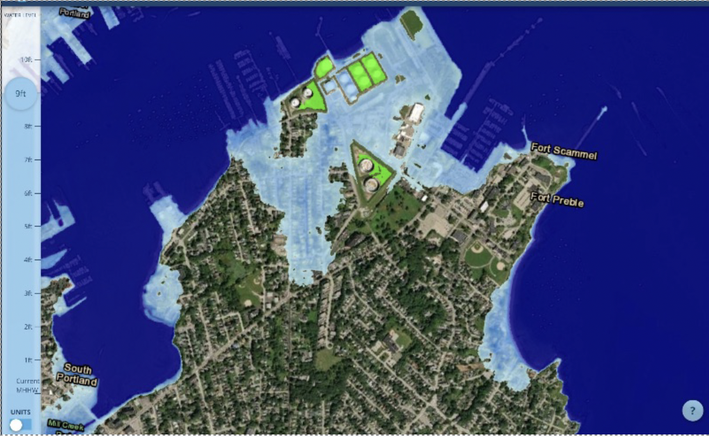
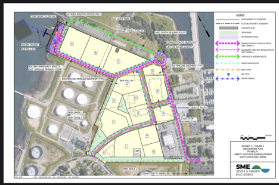

Protect South Portland’s mission statement is as follows: to promote actions and practices that serve to protect the environment and the health and welfare of South Portland. We feel this includes the health and welfare of potential future residents of our city.
The proposed development, Yard South, in the Shipyard area of South Portland near Bug Light, has many issues that we at PSP feel need to be addressed before the city can even consider changing the zoning in that area to allow for the 3–4 18 story high rise buildings that could house 2,000 or more people.
In addition to the dangerous health impacts of tank fumes on people living near these tanks, sea level rise and climate-driven natural disasters could impact not only proposed new residential dwellings but also the low-lying tanks themselves. Storm surges could flood the foundations of the tanks, releasing toxins or dislodging the tanks. The areas surrounding the tanks are at risk of catastrophic events which include explosions and/or fires that would require emergency evacuation. We have not seen the city’s plan for emergencies.
Below are some of the well-researched reasons and disturbing unknowns that we need to present to the Planning Board and to our representatives — Our City Council.

The Shipyard district on South Portland’s waterfront, site of the proposed Yard South development.

Tank farms and zoning parcels around the Yard South site.
Talking points for issues that need to be brought forward and adequately addressed
We don’t know the threats from climate change and water inundation to above-ground petroleum infrastructure and buried petroleum infrastructure.
We need to know what percentage of the coast of So. Portland has decades-old petroleum infrastructure that will need to be protected.
Petroleum sludge was buried on the site of tank farms until 1968.
Prior to 1980 no records of spills or treatment of hazardous waste was mandated. Unidentified sources of contamination may leach into soils and our harbor during extreme weather events and sea level rise.
Residents at the fence line of the Yard South property would be exposed to Hazardous Air Pollutants (HAPs) and Volatile Organic Compounds (VOCs) in two ways: constant direct venting of petroleum tanks and intense concentration 12–24 hour long “burst emissions” during tanker offloads as expressed in the Clean Air Advisory Committee Report.
Maine’s Ambient Air Guideline (AAG) for benzene, a strong carcinogen, is .4 parts per billion. Massachusetts’ Ambient Air Guidelines for benzene is .3 parts per billion. Recent DEP monitoring data near Bug Light has been shown to exceed Maine’s AAG for benzene many times.
According to DEP permits, the tanks in this area contain a wide variety of petroleum products including: gasoline, jet fuel, and diesel. The tank farm next to the Shipyard is licensed to an annual throughput of 823,000 gallons of petroleum products, 330,000 gallons of which are gasoline. This comes to a total of 49.9 VOC tons per year and 24.9 tons of HAPs per year. DEP estimates that 25% of Portland Pipeline’s 220 tons of VOCs is coming from the Bug Light area tanks.
Although Portland Pipeline has been less active now, there is always the possibility that operations could increase in the future.
People living around the tanks are exposed to cumulative toxic substances which are known to cause cancer, respiratory, immune, reproductive, liver, kidney and neurological damage. Fetuses and young children are especially susceptible.
Maine is among the top 9 states for cancer per capita and has an elevated per capita childhood cancer rate. Reducing the local exposure should be a top priority.
Homes and other potential services such as schools and day cares should not be built near tank farms.
Historically, no actual testing of emissions has been conducted at any of the tank farms as a requirement of the operators’ state licenses. The Maine DEP has relied on a formula created by the American Petroleum Institute to self-report their own estimated emissions.
After requiring actual testing, in 2012, 2013, and 2020, the EPA brought lawsuits against 3 of the 6 oil companies: Global, Sprague, and Gulf. All were found to have significant violations of their permitted emissions. The oil companies have never been forced to remediate their processes to prevent future excessive emissions; they have just had to pay a fine.
The EPA has determined that the American Petroleum Institute formula used to measure emissions is widely inaccurate.
People living near the tank farms have complained of smells that force them to retreat inside and sometimes seal their windows to prevent the fear of known health effects.
During the Clear Skies Ordinance legal battle, expert testimony confirmed that no level of benzene is safe.
The tanks nearest the Yard South property contain the most volatile petroleum substance — gasoline. If there is a fire at these tanks or a massive leak or explosion, how could the city possibly evacuate potentially 2,000 people when there is only one road leading away from this property?
Is our fire department equipped to fight a fire on the 17th floor? Will our city need to purchase more fire equipment at great expense?
The public has not been made aware that there is a specific evacuation plan in case of a catastrophic event.
Sea level rise and storm surges
According to a recent Gulf of Maine Research Institute presentation to the Comprehensive Plan Committee, the rate of sea level rise has been increasing and predictions are likely to become more dire.
If flooding from sea level rise and storm surges cause damage to properties at Yard South, who pays for emergency help and restoration if insurance rates are too high or there has not been the ability to get insurance? Our taxes? It seems that the City of South Portland needs to use all available funding to protect already established properties and not add new developments where they are endangered.
This property is located on a brownfield site. We don’t know how much of the property will be remediated and we don’t know what toxins are buried in the soil. There are petroleum pipes under this property as well. What will a higher water level do to these potentially very old pipes?
The tanks are near the shoreline. We have not seen any plans as to how to protect a potential new community and Casco Bay from damage to the tanks whether it be leakage, tanks moving off their bases, or possible collapse.